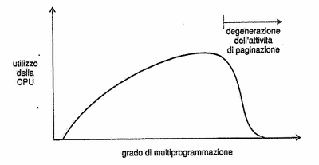

Torna alla pagina di Sistemi Operativi
:: Appunti 2.0 ::
La memoria virtuale
La memoria virtuale è una tecnica che consente l'esecuzione dei processi che non sono completamente in memoria, astraendo la memoria centrale in un vettore di memorizzazione molto più grande e uniforme. Essa consente inoltre di condividere facilmente porzioni di memoria e semplifica la creazione dei processi. Per contro è piuttosto difficile da implementare e può rallentare il sistema se progettata e adoperata con poca attenzione.
Ambiente
Le istruzioni dei processi per poter essere eseguite devono risiedere in memoria centrale, con le limitazioni sulle dimensioni che ne conseguono. Spesso è però inutile caricare tutto il codice, o perché contiene procedure che si usano raramente (ad esempio gestione degli errori), o perché si alloca più memoria del necessario per array o liste, o ancora perché è difficile che diverse porzioni del programma servano contemporaneamente. L'esecuzione di un programma caricato solo parzialmente in memoria ha invece diversi vantaggi, dato che non è più vincolato alla dimensione della memoria centrale e permette il caricamento di più processi aumentando così il livello di multiprogrammazione (dunque lo sfruttamento della CPU).
La memoria virtuale comporta la netta separazione tra memoria logica e fisica. Il programmatore non dovrà più preoccuparsi della quantità di memoria fisica disponibile o di quale codice dovrà collegare nell'overlay, ma potrà concentrarsi sul programma con soddisfazione di tutti. Lo spazio di indirizzamento virtuale è in sostanza quello logico di cui si parlava nel capitolo precedente, dunque deve essere mappato sulla memoria fisica dalla MMU. La mappatura può essere contigua o più spesso sparsa, quest'ultima con importanti benefici come una maggiore semplicità di gestione di heap e stack, e la condivisione di librerie o altri oggetti.
Richiesta di paginazione
La memoria virtuale viene implementata in genere con la richiesta di paginazione (per la cronaca, esiste ovviamente anche una richiesta di segmentazione, ma è più complessa a causa delle dimensioni variabili dei segmenti). Tale sistema è simile alla paginazione con swap, ma gli scambi di memoria dei processi non avvengono sull'intero codice e vengono attuati da uno scambiatore pigro che non swappa mai una pagina in memoria a meno che non sia assolutamente necessaria. Definirlo quindi paginatore è più appropriato, dato che tratta le singole pagine.
Concetti fondamentali
Il paginatore porta in memoria solo quelle pagine che ipotizza saranno necessarie. Per distinguere le pagine caricate da quelle che non lo sono si utilizza il bit di validità/non validità, che indica rispettivamente se la pagina è legale e caricata in memoria centrale o viceversa; quest'informazione è ovviamente riportata nella tabella delle pagine. Se con un'attenta paginazione si riesce a indovinare e caricare tutte e sole quelle pagine che saranno richieste, è come se fosse stato caricato l'intero processo dato che una pagina non richiesta anche se non valida non provocherà alcun effetto sull'esecuzione.
E se invece il processo cerca di accedere proprio a una pagina non valida? In questo caso scatta una trap di mancanza di pagina (page fault) che mette in moto la seguente routine:
- si ricontrolla la tabella delle pagine del processo per verificare che la pagina richiesta non sia effettivamente valida
- se la pagina non è legale si termina il processo, altrimenti bisogna paginarla
- si cerca un frame libero
- si schedula un'operazione su disco per leggere la pagina voluta nel frame appena allocato
- a operazione terminata si aggiorna la tabella delle pagine
- si fa ripartire l'istruzione che era stata interrotta dalla trap
Il caso limite è far partire un processo senza aver caricato nessuna parte del suo codice in memoria: si avranno una novena di page fault finché non riuscire a funzionare normalmente. Questo sistema si chiama richiesta pura di paginazione e garantisce che venga caricato il minimo numero indispensabile di pagine. Ovviamente troppi page fault appesantiscono il sistema, ma vedremo come limitarne l'occorrenza con alcuni accorgimenti e osservazioni, come quelle sulla località dei riferimenti.
Prestazioni della richiesta di paginazione
Il tempo di accesso effettivo per una memoria a una richiesta di paginazione coincide pressapoco al tempo di accesso (da 10 a 200 ns) in mancanza di page fault, altrimenti aumenta proporzionalmente al loro numero. La gestione di un page fault abbiamo infatti visto che è piuttosto onerosa (si arriva anche a centinaia di istruzioni).
Se chiamiamo p la probabilità di riscontrare un page fault, avremo che il
tempo di accesso effettivo = (1-p) x ma + p x tpf
, dove ma è il tempo di accesso alla memoria e tpf il tempo di servizio di un page fault.
Copia durante la scrittura
Un nuovo processo viene generato con la chiamata di sistema fork(), che nella sua implementazione originale provoca una duplicazione dello spazio di indirizzamento del padre che sarà assegnata al figlio. Dato però che molti processi eseguono una exec() subito dopo la creazione (modificando così il proprio codice di partenza), la copia completa degli spazi di indirizzamento è spesso uno spreco di tempo e spazio.
Una tecnica alternativa è la copy-on-write, che permette ai processi padri e figli di condividere inizialmente le stesse pagine (opportunamente contrassegnate), e se poi uno dei due ne vuole modificare una ne viene generata una copia che sarà mappata nello spazio logico di quel processo. Tutte le pagine non modificate o marcate come non modificabili (ad esempio quelle contenenti il codice) sono condivise con considerevole risparmio. Le copie generate durante una copy on write vengono allocate in pagine libere facenti parte di un pool appositamente mantenuto, su cui vengono applicati dei meccanismi zero-fill-on-demand, ovvero vengono azzerate le pagine (cancellando tutto il loro contenuto) prima di essere allocate.
Associazione dei file alla memoria
.....
Sostituzione della pagina
Abbiamo visto come il non allocare tutte le pagine di un processo possa aumentare il livello di multiprogrammazione, ma si potrebbe incorrere in un nuovo problema: la sovra-allocazione. Se infatti il processo (che ricordiamo condivide la memoria centrale anche con i buffer di I/O) improvvisamente ha bisogno di allocare tutte le sue pagine e non ci sono più frame a disposizione che si fa? Terminarlo non è saggio, lo swap lo vedremo poi, vada per la sostituzione delle pagine!
Sostituzione di base della pagina
Di seguito illustreremo i passi della sostituzione di base della pagina:
- trovare la posizione della pagina desiderata su disco
- trovare un frame libero
- se c'è, usarlo
- se non c'è, selezionare un frame vittima
- scrivere quest'ultimo su disco e aggiornare la tabella delle pagine e quella dei frame
- leggere la pagina desiderata nel frame libero e aggiornare le tabelle
- riprendere il processo
Notare che in mancanza di frame liberi si rende necessario il trasferimento di due pagine, una verso il disco e l'altra verso la memoria centrale. Con un semplice accorgimento hardware, il bit di modifica, si riesce però a fare in modo di evitare che siano trasferite su disco le pagine non modificate o non modificabili.
La sostituzione di base della pagina garantisce la separazione tra memoria fisica e virtuale, ed il suo algoritmo implementativo assieme a quello per l'allocazione dei frame deve essere oggetto di scrupolosa attenzione dato che piccoli miglioramenti su di essi comportano notevoli guadagni sull'intero sistema. Questi algoritmi vengono valutati facendoli operare su stringhe di riferimento, ovvero stringhe degli identificatori delle pagine richieste, generate casualmente o prese direttamente dall'esecuzione di un sistema reale. Vediamo ora alcuni algoritmi di sostituzione.
Sostituzione FIFO della pagina
Quello FIFO è l'algoritmo di sostituzione più facile da capire e programmare, e consiste nella sostituzione della pagina più vecchia (calcolata con un timestamp o grazie a una coda FIFO).
Le sue prestazioni non sono notevoli dato che l'idea di fondo "le pagine richieste tempo fa non saranno più necessarie" non regge con quelle usate molto frequentemente. Inoltre essendo possibile la sostituzione di una pagina attiva, il numero di page fault può aumentare sensibilmente.
Inoltre l'algoritmo FIFO soffre dell' anomalia di Belady, ovvero il suo tasso di mancanza di pagina all'aumentare del numero di frame può aumentare invece che diminuire come ci si aspetterebbe.
Sostituzione ottimale della pagina
L'algoritmo ottimale di sostituzione della pagina è quello col più basso tasso di page fault e che non soffre dell'anomalia di Belady. E' anche chiamato OPT o MIN ed è definito così: viene sostituita la pagina che non sarà usata per il più lungo periodo di tempo.
Non è implementabile dato che implica la conoscenza aprioristica della stringa di riferimento, il che è praticamente impossibile. Viene tuttavia utilizzato come termine di paragone.
Sostituzione LRU della pagina
La sostituzione LRU (Least-Recently-Used) ha come politica quella di sostituire la pagina che non è stata usata per il periodo di tempo più lungo. Se la OPT rappresenta l'algoritmo ottimale tra quelli che guardano in avanti nella stringa di riferimento, la LRU è quella ottimale tra quelli che guardano indietro. E' considerata in genere molto buona, seppur richieda un notevole supporto hardware e non tutti i sistemi operativi potrebbero tollerare un simile appesantimento della gestione della memoria
Per determinare qual è la pagina che non è stata usata per il periodo di tempo più lungo sono percorribili due strade:
- contatori, che si aggiungono come nuovo campo per ogni elemento della tabella delle pagine e che vengono incrementati per ogni nuovo riferimento ad esse
- stack, ogni volta che si fa riferimento a una pagina questa viene rimossa dallo stack e messa in cima. In questo modo tutte le pagine usate più di recente sono nella parte alta
E' dimostrabile che gli algoritmi LRU non soffrono dell'anomalia di Belady.
Sostituzione della pagina con approssimazione dell'algoritmo LRU
Per quei sistemi che non sono in grado di utilizzare l'algoritmo di sostituzione LRU sono possibili un certo numero di approssimazioni, spesso realizzate utilizzando un bit di riferimento associato a ogni pagina (e riportato nella solita tabella delle pagine) che dice se questa è stata referenziata o meno.
Vediamoli.
Algoritmo dei bit di riferimento addizionali
Ad ogni pagina è associato un byte di 8 bit. Ad intervalli regolari il sistema operativo provvede a inserire il bit di riferimento della pagina nella cifra più significativa del byte, shiftando tutte le altre cifre a destra. In questo modo si può stabilire che quella usata meno di recente è la pagina col byte più basso. Se le pagine vittima individuate sono poi più di una, si possono sostituire entrambe o applicare una FIFO.
Algoritmo della seconda possibilità
Si basa sul FIFO, con la differenza che quando una pagina viene selezionata si controlla il suo bit di riferimento: se è 0 si sostituisce, altrimenti lo si azzera e gli si dà una seconda possibilità passando all'elemento successivo. E' anche detto algoritmo dell'orologio e può essere implementato con una coda circolare delle pagine. Notare che se una pagina viene utilizzata abbastanza spesso può non essere mai sostituita, e che l'algoritmo degenera in FIFO se tutti gli elementi sono settati a 1.
Algoritmo della seconda possibilità migliorato
In questo algoritmo si utilizzano come chiavi sia il bit di riferimento che quello di modifica. Possiamo dunque individuare quattro classi di pagine col seguente ordinamento:
- (0,0): pagina non usata di recente e non modificata, la migliore da sostituire
- (0,1): pagina non usata di recente recente ma modificata, meno preferibile dato che dovrà essere scritta completamente prima della sostituzione
- (1,0): pagina usata di recente non modificata
- (1,1): pagina usata di recente e modificata
Si sostituisce quindi la prima pagina incontrata con l'ordine più basso, così da ridurre il numero di chiamate I/O richieste.
Sostituzione della pagina basata su conteggio
Si tiene traccia del numero di riferimenti di ogni pagina e si può scegliere tra due politiche da applicare:
- l'algoritmo di sostituzione delle pagine usate meno di frequente, che sostituisce le pagine col conteggio più basso basandosi sull'idea che le pagine attive avranno valori alti. Ma che fare se ad esempio una pagina viene usata pesantemente in un limitato intervallo di tempo e poi non è mai più richiesta? In questo caso una possibile soluzione è far decadere il valore del contatore a intervalli regolari
- l'algoritmo di sostituzione delle pagine più frequentemente usate, la cui idea di fondo è che probabilmente se una pagina ha conteggio basso è perché deve ancora essere utilizzata
Algoritmo per l'uso del buffer delle pagine
Agli algoritmi di sostituzione si affiancano altre procedure che ottimizzano ulteriormente le prestazioni. Ad esempio il sistema operativo mantiene un certo numero di frame liberi nei quali verrà scritta la pagina richiesta prima che la vittima venga salvata fuori dalla memoria centrale. In questo modo il processo potrà ricominciare il prima possibile dopo un page fault senza dover aspettare che la vittima venga salvata.
Un'altra procedura utile è fare in modo che quando il paginatore è a riposo provveda a scrivere su disco le pagine con bit di modifica settata a 1, così che non dovranno essere riscritte al momento della sostituzione.
Le applicazioni e la sostituzione delle pagine
Ci sono alcune applicazioni che hanno prestazioni peggiori con la memoria virtuale a causa della gestione particolare che essi fanno della memoria stessa, profondamente differente da quella convenzionale del file system. Stiamo parlando ad esempio dei database. Per queste applicazioni possono essere previste aree di memoria grezze, da utilizzare come se fossero una grande successione sequenziale di blocchi logici, in cui è assente una qualsiasi struttura dati.
Allocazione dei frame
La paginazione pura che abbiamo visto qualche capitolo fa è una possibile tecnica per l' allocazione dei frame. Inizialmente tutti i frame disponibili vengono messi nella lista dei frame liberi, e saranno occupati man mano che l'esecuzione di un processo genererà una sequenza di page fault. Quando il processo termina i frame tornano ad essere disponibili.
Sono possibili dei miglioramenti, ad esempio far rientrare nelle pagine libere anche alcune di quelle riservate al sistema operativo, o sfruttare lo swap, o riservare alcuni frame da mantenere sempre liberi per la paginazione.
Numero minimo di frame
Qual è il numero di frame da associare a un processo? Esiste una regola generale?
In realtà ogni sistema ha una propria politica, ma tutti devono rispettare un limite superiore e uno inferiore. Quello superiore è ovviamente la quantità di memoria fisica disponibile, mentre quello inferiore dipende dall'architettura del computer. Più il numero minimo di frame è piccolo maggiore è la probabilità che si abbiano page fault, quindi va stabilito con attenzione. Altro fattore critico è la possibilità di avere sistemi che consentono livelli multipli di indirezione, ovvero istruzioni che fanno riferimento ad indirizzi indiretti. In questi scenari la memoria fisica richiesta per una singola istruzione potrebbe coinvolgere un gran numero di frame, dunque è opportuno fissare un limite al numero di livelli.
Algoritmi di allocazione
L' allocazione omogenea è l'algoritmo più semplice da applicare per ripartire i frame tra i vari processi, dandone a ognuno la stessa quantità; quelli che avanzano vengono tenuti da parte come frame liberi. Si dimostra poco soddisfacente nel caso in cui un processo debba accedere spesso a grosse strutture dati o a numerose porzioni di codice.
Un'alternativa è l' allocazione proporzionale, che assegna la memoria in base alle dimensioni del processo. Definendo S = ∑si , con si memoria virtuale del processo pi, allora se il numero totale di frame disponibili è m vengono allocati ai frame al processo, dove ai è definito come: ai = (si/ S) x m . Nella maggior parte dei casi si dimostra la soluzione migliore. Una variante prevede l'utilizzo della priorità come fattore di proporzionalità.
Che sia proporzionale o omogenea, l'allocazione dei singoli processi cambia a seconda del livello di multiprogrammazione perché ci saranno più o meno processi a contendersi i frame.
Confronto tra le allocazioni con sostituzione locale e globale
Una classificazione degli algoritmi di sostituzione delle pagine prevede la distinzione tra sostituzioni locali e globali. Queste ultime consentono a un processo di selezionare la vittima considerando tutti i frame, compresi quelli allocati ad altri processi. La sostituzione locale richiede invece che ogni processo attui la scelta solo tra i frame ad esso allocati.
Il vantaggio della tecnica globale è che ogni processo può aumentare il numero di frame assegnati, ma ha per contro l'impossibilità di controllare il proprio tasso di page fault dal momento che dipende da altri processi. E' comunque l'algoritmo che dà risultati migliori ed è il più usato.
Thrashing
Se i frame assegnati a un processo scendono al di sotto del numero minimo definito dall'architettura (ad esempio nello scenario di un'allocazione proporzionale basata sulla priorità), il processo deve essere sospeso e la memoria da lui allocata va liberata. Se fosse andato avanti con un numero insufficiente di frame sarebbe presto andato incontro a un page fault, che avrebbe richiesto una sostituzione di pagine tra quelle ancora attive, il che avrebbe causato un altro page fault, e così via. Quest'alta attività di paginazione prende il nome di thrashing, ed il processo che ne soffre spenderà più tempo a paginare che a proseguire nell'esecuzione.
Cause del thrashing
Consideriamo questa situazione: il sistema operativo controlla l'utilizzo della CPU e se questo è troppo basso aumenta il livello di multiprogrammazione introducendo un nuovo processo. Con un algoritmo di sostituzione globale ci saranno più processi a concorrere per gli stessi frame, e rubandoseli a vicenda faranno più richieste al paginatore. L'attesa dei processi in questa coda farà diminuire ulteriormente l'utilizzo del processore, che reagirà al solito attivando un nuovo processo alimentando la spirale. Si arriverà a un punto in cui l'attività produttiva del sistema crolla mentre aumenta a dismisura il tasso dei page fault.

Questo è il classico esempio di thrashing, da cui si può uscire soltanto diminuendo il livello di multiprogrammazione. Si può limitarne gli effetti col rimpiazzamento locale (o a priorità) imponendo che un processo in thrashing non possa richiedere frame da altri ma se la cavi con i suoi. Questa non è una vera soluzione dal momento che il processo occuperà comunque per moltissimo tempo la coda di paginazione.
Per risolvere completamente il problema bisognerebbe invece sapere a priori di quanti frame avrà bisogno un processo, un numero che può essere approssimato applicando il modello di località di esecuzione. Questo modello afferma che durante la sua esecuzione il processo si sposta da una località di memoria all'altra, ovvero in gruppi di pagine (che possono anche sovrapporsi) che vengono usate insieme. La loro esistenza è diretta conseguenza della programmazione strutturata di programmi e basi di dati.
Il modello working set
Il modello working set è un'approssimazione di quello delle località e fa uso del parametro Δ per definire la finestra del working set, ovvero l'insieme dei riferimenti più recenti esaminati. Se una pagina è attiva sarà sicuramente nel working set, mentre se non è più in uso ne uscirà dopo Δ unità di tempo dal suo ultimo utilizzo. Si intuisce dunque che la precisione del modello dipende da Δ: se è troppo piccolo non rappresenterà la località in modo adeguato, se è troppo grande si sovrapporrà ad altre località (troppe).
Indicando con wss la dimensione del working set calcolata per ogni processo pi del sistema, diremo che D = ∑ wss, dove D è la richiesta totale di frame. Se D è maggiore del numero di frame disponibili si avrà il thrashing.
Il sistema operativo controlla il working set di ogni processo assegnandogli frame sufficienti: se ce ne sono abbastanza fa partire un nuovo processo, ma se D supera il numero di frame disponibili allora farà in modo di sostituire le pagine inattive. In questo modo si previene il thrashing mantenendo il livello di multiprogrammazione il più alto possibile.
La difficoltà del modello è tener traccia del working set, per questo viene generalmente approssimato utilizzando un interrupt di un temporizzatore a intervalli fissi di tempo e un bit di riferimento.
Frequenza delle mancanze di pagina
Il modello working set è efficace per controllare il working set (ovviamente) e si rivela utile anche per la prepaginazione, ma non affronta il problema del thrashing in modo diretto quanto la strategia di controllo della frequenza delle mancanze di pagina (Page-Fault Frequency, PFF). Il principio è questo: si sa che il thrashing ha un alto tasso di page fault, dunque è possibile fissare un limite superiore a tale tasso superato il quale si assegna al processo un nuovo frame. Si fissa inoltre un limite inferiore per evitare che un processo abbia inutilmente più frame del necessario, sceso al di sotto del quale gliene vengono tolti uno o più. Ciò che avviene è un bilanciamento dinamico del numero dei frame assegnato ai processi in base alla situazione attuale, senza sapere a priori quanti gliene servono davvero.
Come per il working set, anche con questa tecnica può essere necessario sospendere qualche processo finché non ci sono abbastanza frame disponibili; in questo caso i frame liberati vengono distribuiti tra i processi che hanno frequenza di mancanze di pagina maggiore.
File mappati in memoria
Normalmente ogni accesso al file richiede una chiamata di sistema e un accesso al disco. Si può in alternativa usare le tecniche di accesso alla memoria virtuale per trattare le chiamate I/O al file come se fossero accessi alle procedure di gestione della memoria. Questo metodo è noto come mappatura in memoria di un file, ed associa logicamente un file a una parte dello spazio degli indirizzi virtuali.
Altre considerazioni
Prepaginazione
La più evidente caratteristica della pura richiesta di paginazione è il grande numero di page fault riscontrati all'avvio del processo o alla sua ripresa dopo la sospensione. La prepaginazione è un sistema che ha come obiettivo quello di ridurre il numero elevato di richieste di paginazione, caricando contemporaneamente in memoria tutte quelle pagine che crede saranno necessarie nell'immediato futuro. Ad esempio nel modello working set al momento di sospendere un processo potrà tenere traccia delle pagine che fanno parte della sua finestra, così che al momento della riattivazione potrà caricarle contemporaneamente prevenendo la richiesta.
Le intenzioni della prepaginazione sono buone, bisogna però fare in modo che le pagine prepaginate non siano tra quelle che non verranno mai usate dal processo, o i vantaggi svanirebbero.
La dimensione della pagina
Come si sceglie la dimensione della pagina? Vanno considerati diversi fattori, ad esempio con pagine molto piccole si utilizzerà meglio la memoria minimizzando le frammentazioni, ma si avranno tabelle delle pagine molto più grandi.
Per quanto riguarda le operazioni di I/O sulle pagine va considerato che spesso i tempi di latenza e di ricerca superano quelli effettivi di trasferimento, il che sembrerebbe avvantaggiare le pagine più grandi. Allo stesso tempo però pagine più piccole accentuerebbero le località, migliorando così la risoluzione e dunque permettendo di isolare esclusivamente le aree di memoria realmente necessarie. Inoltre per pagine grandi una minuscola modifica comporterebbe comunque il trasferimento dell'intero blocco.
Il problema non ha dunque una risposta migliore in assoluto, anche se storicamente si sta tendendo a preferire pagine con dimensioni più grandi.
Estensione della TLB
L' estensione della TLB è una misurazione data dalla dimensione della pagina moltiplicata per il numero di elementi nella tabella. Maggiore è il suo valore e minore è il tasso di page fault ed il tempo di accesso medio alla memoria. Si può dunque tentare di intervenire sull'estensione della TLB aumentando il numero di elementi o la dimensione delle pagine, magari usandone di dimensioni diverse.
Tabella delle pagine invertita
La tabella delle pagine invertita riduce la quantità di memoria fisica necessaria per la traduzione da indirizzo logico a fisico, ma non ha alcune informazioni necessarie alla paginazione. Per questo motivo vengono mantenute tabelle esterne delle pagine referenziate quando c'è un page fault.
Struttura del programma
Abbiamo visto che i page fault possono essere ridotti se il programma ha una forte località, che può essere ottenuta perseguendo una buona strutturazione del programma, quindi applicando le modularità, studiando attentamente le figure strutturali ed analizzando quali strutture dati sono più adeguate per il problema. In questo modo compilatori e linker produrranno codici decisamente più efficienti sotto il profilo della paginazione.
Blocco dei dispositivi di I/O
Un'operazione di I/O prevede l'utilizzo di un certo numero di frame, e bisogna fare in modo che non avvenga alcuna sostituzione globale su di essi prima che l'I/O non sia concluso, o la risposta sarebbe ricevuta dal processo sbagliato. Una soluzione è fare in modo che i buffer I/O siano nello spazio di indirizzamento del sistema operativo (il risultato andrà poi però copiato nella memoria del processo, con un conseguente appesantimento del sistema), un'altra è bloccare tali pagine adoperando un bit di blocco.
Elaborazione in tempo reale
La memoria virtuale può introdurre dei ritardi inaspettati nella computazione a causa dei tempi di gestione della paginazione, una caratteristica incompatibile con i processi in tempo reale, per i quali il fattore critico è proprio il tempo.
Una soluzione potrebbe essere fare in modo che i processi in real time possano dire al sistema operativo quali sono per loro le pagine critiche, così che possano essere precaricate ed eventualmente anche bloccate. In caso di abuso tutti gli altri processi potrebbero essere sospesi: priorità massima al processo in tempo reale.
Torna alla pagina di Sistemi Operativi